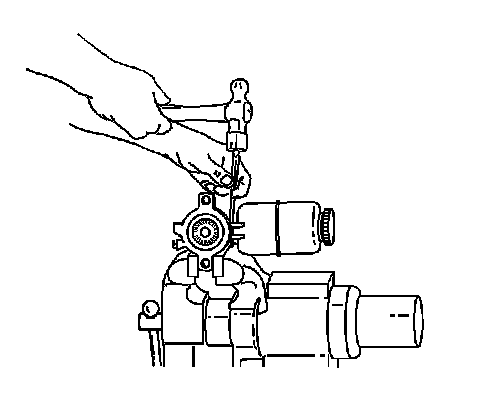
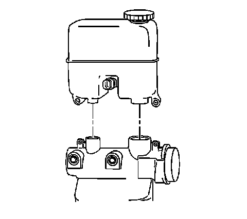

Master Cylinder Reservoir Replacement
Master Cylinder Reservoir Replacement
Removal Procedure
Caution: Refer to Brake Fluid Irritant Caution.
Notice: Refer to Brake Fluid Effects on Paint and Electrical Components Notice.

1. Apply the park brake and block the wheels.
2. Remove the master cylinder.
3. Drain the master cylinder reservoir.
4. Secure the master cylinder in a vise. Do not clamp the master cylinder body, secure only at the flange.
5. Remove the brake fluid level sensor by carefully depressing the retaining tabs and pushing the sensor through the reservoir.
6. Carefully remove the reservoir retaining pins.

7. Remove the reservoir from the master cylinder by pulling the reservoir straight up and away from the cylinder.
8. Remove the seals from the master cylinder.
Installation Procedure
1. Inspect the reservoir for cracks or deformation. If found, replace the reservoir.
2. Clean the reservoir with denatured alcohol, or equivalent.
3. Dry the reservoir with non-lubricated, filtered air.
4. Lubricate the new seals and the outer surface area of the reservoir-to-housing barrels with Delco Supreme 11(R), GM P/N 12377967 (Canadian P/N 992667) or equivalent DOT-3 brake fluid from a clean, sealed brake fluid container.
5. Install the lubricated seals. Ensure that they are fully seated.
6. Install the reservoir to the master cylinder by pressing the reservoir straight down on the master cylinder until the pin holes are aligned.
7. Carefully install the reservoir retaining pins to secure the reservoir.
8. Place the brake fluid level sensor into the reservoir, press into place to secure the sensor retaining tabs.
9. Remove the master cylinder from the vice.
10. Install the master cylinder.
11. Release the park brake.
12. Bleed the hydraulic brake system. Refer to Hydraulic Brake System Bleeding.